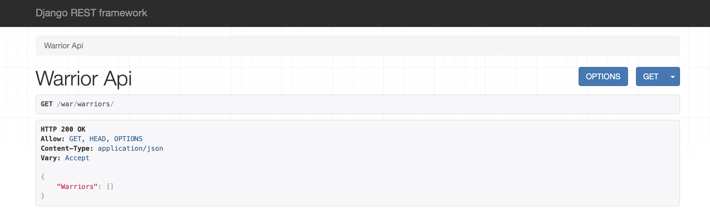
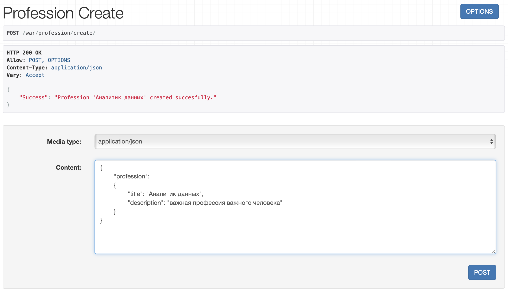
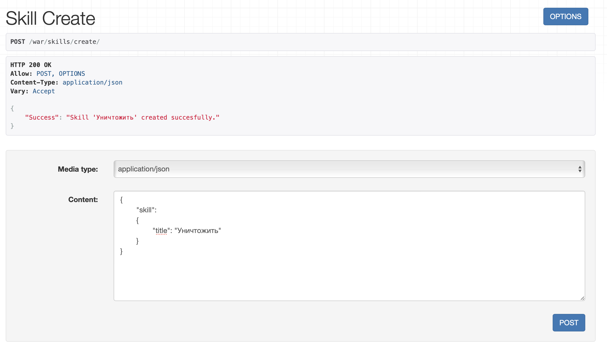
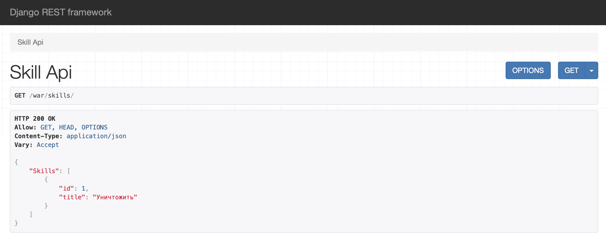
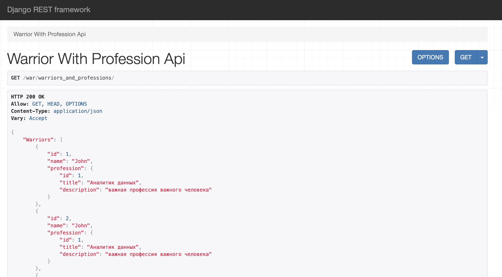
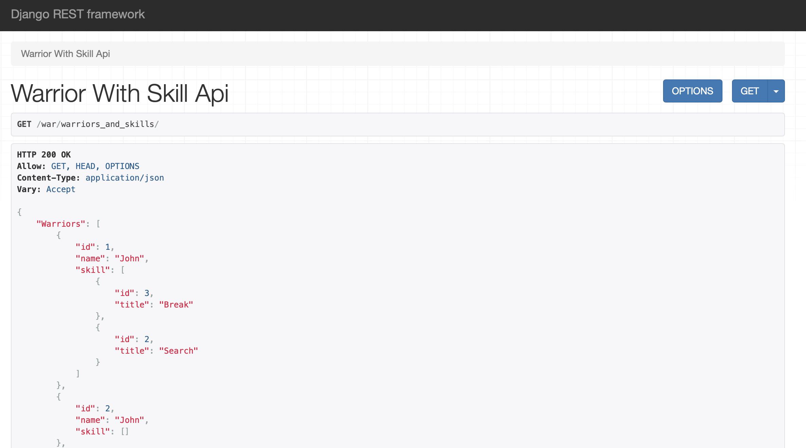
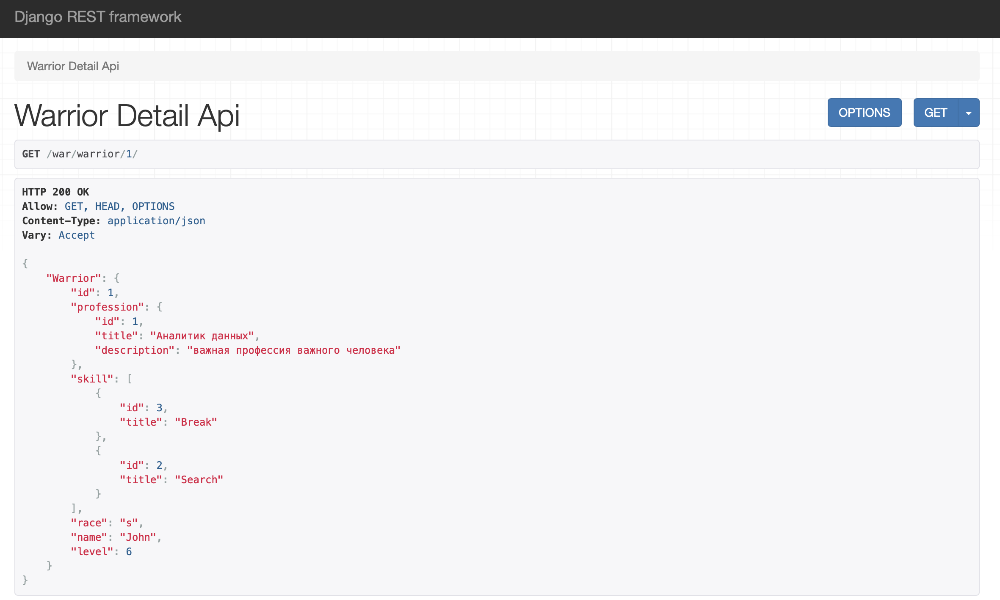
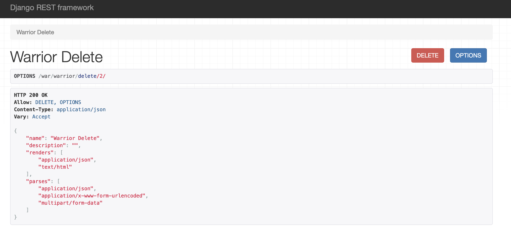
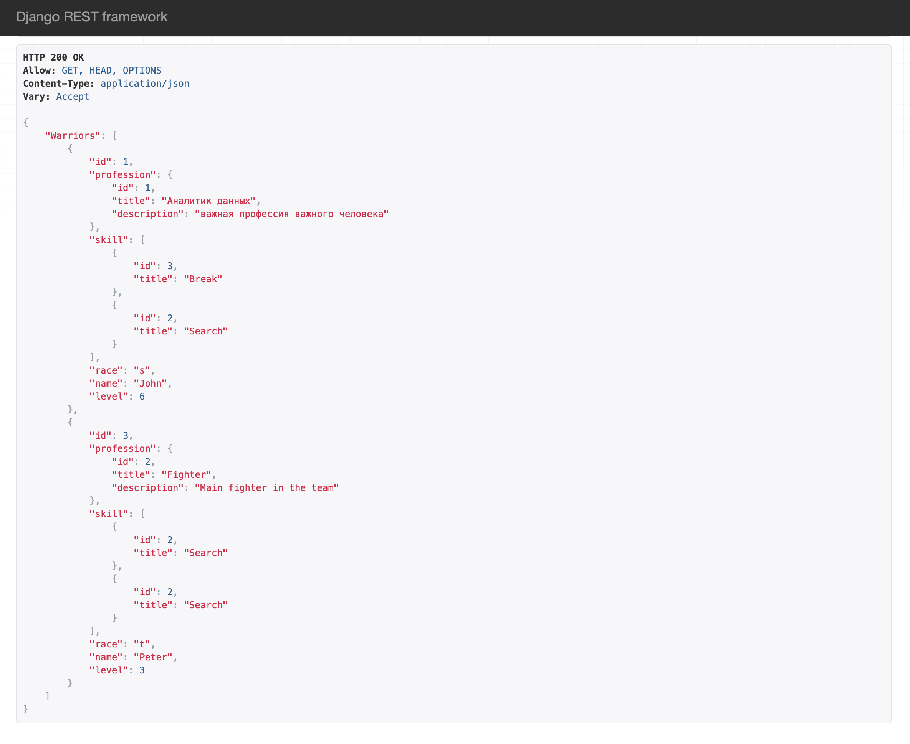
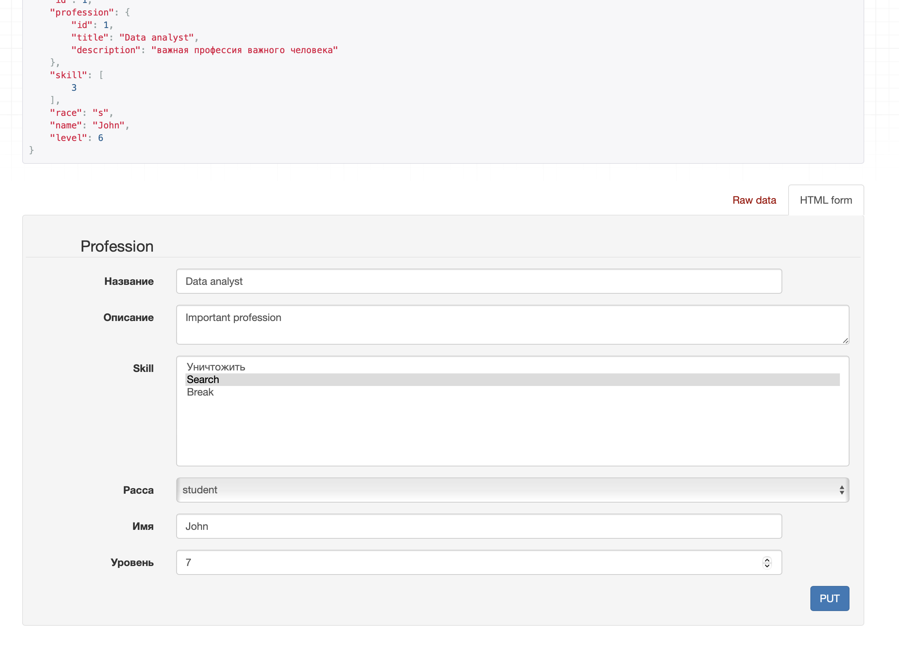

Практическая работа №3.2. "Django rest framework"
Цель работы: получить представление об использовании возмжностей работы контроллеров и серриализаторов в Django Rest Framework.
Первым делом выполним поэтапно все необходимые пункты, которые прописаны на старте практической работы №3.2. В результате у нас будут реализованы GET и POST для Warrior и Profession:


Следующий этап - самостоятельно реализовать ендпоинты для добавления и просмотра скилов методом, описанным в первой части лабораторной работы.
Создадим сериалазеры:
class SkillSerializer(serializers.ModelSerializer):
class Meta:
model = Profession
fields = "__all__"
class SkillCreateSerializer(serializers.ModelSerializer):
class Meta:
model = Profession
fields = "__all__"
И импортируем их в view.py:
class SkillAPIView(APIView):
def get(self, request):
skill = Skill.objects.all()
serializer = SkillSerializer(skill, many=True)
return Response({"Skills": serializer.data})
class SkillCreateView(APIView):
def post(self, request):
skill = request.data.get("skill")
serializer = SkillCreateSerializer(data=skill)
if serializer.is_valid(raise_exception=True):
profession_saved = serializer.save()
return Response({"Success": "Skill '{}' created succesfully.".format(profession_saved.title)})
Проверим работоспособность, перейдя по соответствующим ссылкам:  И посмотрим, успешно ли добавление через GET запрос: 
Следующее задание - реализовать ендпоинты: - Вывод полной информации о всех войнах и их профессиях (в одном запросе)
class WarriorWithProfessionAPIView(APIView):
def get(self, request):
warriors = Warrior.objects.select_related('profession').all()
serializer = WarriorWithProfessionSerializer(warriors, many=True)
return Response({"Warriors": serializer.data})
class WarriorWithProfessionSerializer(serializers.ModelSerializer):
profession = ProfessionCreateSerializer()
class Meta:
model = Warrior
fields = ['id', 'name', 'profession']
path('warriors_and_professions/', WarriorWithProfessionAPIView.as_view()),

- Вывод полной информации о всех войнах и их скилах (в одном запросе)
class WarriorWithSkillAPIView(APIView):
def get(self, request):
warriors = Warrior.objects.prefetch_related('skill').all()
serializer = WarriorWithSkillSerializer(warriors, many=True)
return Response({"Warriors": serializer.data})
class WarriorWithSkillSerializer(serializers.ModelSerializer):
skill = SkillSerializer(many=True)
class Meta:
model = Warrior
fields = ['id', 'name', 'skill']
path('warriors_and_skills/', WarriorWithSkillAPIView.as_view()),

- Вывод полной информации о войне (по id), его профессиях и скилах
class WarriorDetailAPIView(APIView):
def get(self, request, pk):
warrior = Warrior.objects.prefetch_related('skill').select_related('profession').get(id=pk)
serializer = WarriorSerializer(warrior)
return Response({"Warrior": serializer.data})
class WarriorSerializer(serializers.ModelSerializer):
profession = ProfessionCreateSerializer()
skill = SkillSerializer(many=True)
class Meta:
model = Warrior
fields = "__all__"
path('warrior/<int:pk>/', WarriorDetailAPIView.as_view()),

- Удаление война по id.
class WarriorDeleteView(DestroyAPIView):
queryset = Warrior.objects.all()
serializer_class = WarriorSerializer
path('warrior/delete/<int:pk>/', WarriorDeleteView.as_view()),

После удаления проверяем путем вывода всей информации о войнах. Как видим, второго id больше нет  - Редактирование информации о войне.
class WarriorUpdateView(UpdateAPIView):
queryset = Warrior.objects.all()
serializer_class = WarriorSerializer
def get(self, request, *args, **kwargs):
warrior = self.get_object()
serializer = self.get_serializer(warrior)
return Response(serializer.data)
path('warrior/update/<int:pk>/', WarriorUpdateView.as_view()),

И проверяем результат